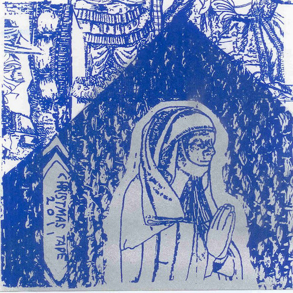
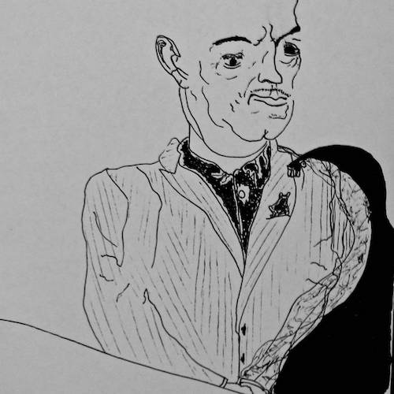
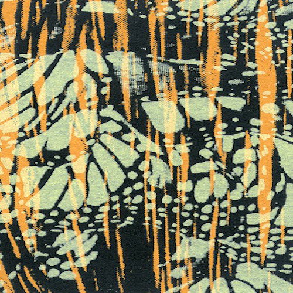
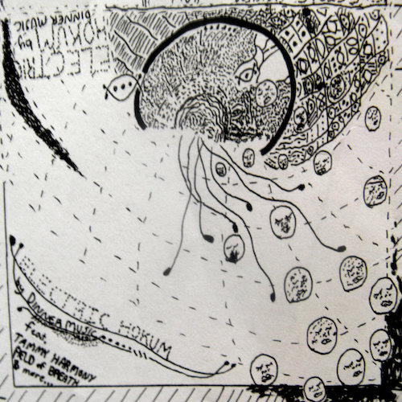

2011

ALLEY VISION "TOP HAT"
<a href="http://humanconduct.bandcamp.com/album/cube-rick-weaver">Cube / Rick Weaver</a>

<a href="http://dinnermusic.bandcamp.com/album/tomb-of-comb">Tomb of Comb by Rick Weaver</a>

<a href="http://dinnermusic.bandcamp.com/album/mule-on-tape">Mule on Tape by Rick Weaver</a>
<a href="http://humanconduct.bandcamp.com/album/raw-personal-material">Raw Personal Material by Global Distance</a>

<a href="http://dinnermusic.bandcamp.com/album/electric-hokum">Electric Hokum by Rick Weaver</a>
<a href="http://humanconduct.bandcamp.com/album/alley-vision">Alley Vision by Alley Vision</a>
<a href="http://dinnermusic.bandcamp.com/album/christopher-scripture">Christopher Scripture by Rick Weaver</a>

![Global Distance is Wiggpaw (Rick Wilson) of the Skarekrau Radio / Kuu Mythology and Rick Weaver. Wiggpaw's been coming over to the Surveillance Center every few days with various tricks up his sleeve. Modified tone, rubber biscuit, gut samples, bullfrogs, apes, guitars, drums, keys, nature, etc. The tape is a post-conception arrangement of captured sounds, mainly allowed to remain nude horizontally, but occasionally stitched together and stacked under the leaking roof. Tricks with time, treated sources, byproducts, necessary shielding. Features movie themes to Cock Film, Gravois Graveyard, and Man in Dirt: Cock Film #2, and more. the mythology of surveillance.
'Before cultures were dehumanized and rendered totally artificial, cultural trends used to emerge from the people. Today, raw personal material is usually categorized as interference or noise... Junk-culture markets dictate acceptable levels of raw personal material, whereas regulatory bodies set the limits in other, more stable sectors.'' -Tom Sherman
June 2011](assets/img/global distance raw personal material.jpg)

![Christopher is a boy who lives outdoors in North Philadelphia, near Polish Springs and the Outpost. These tracks are based on or are readings from his scripture. They were recorded in December 2010 immediately after completion of Clam Date, and mixed in January after setting up shop on the 'Cherokee Mile'. Exactly three muses sat on the throne and under the curtain. Certain tracks are here in public. Download includes full 90 minute album, the original credits and scripture excerpt, 34 drawings, and a tiny palmful of additional tracks from the time period. The original release was limited to 30 copies or so. Singular J-cards were hand drawn. The files of drawings included with the download serve as examples from the same time period. Additional tracks include two covers: one from a split with J. Zagers and the other from a split with Nightburger (now Profligate), as well as an extended Scripture track and a submission from the Tape Fantasy vol II compilation featuring tape samples and modifications of poet / saxophonist Alex Hampshire sources. Christopher Scripture was originally intended as the soundtrack to 'untitled moving picture no 1 2010' by Wendy Hyatt, Rick Weaver, Larva Lu, Christine Jones, Kevin Esposito, Tomas Bennett, & J.G. Harris. The movie is easily found through an engine search. January 2011](assets/img/christopherscripture.jpg)